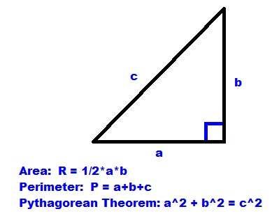

Your challenge is to create a right-triangle calculator:
- Explain what the program does ("This program will calculate the area and perimeter of a right triangle)
-The Program needs to do the following:
- Ask the user to input the base length
- Ask the user to input the height
- Calculate the area and perimeter
- Respond to the user with the results ("Your area is ____, the perimeter is ____
-------------------- INPUT/OUTPUT Check section --------------------------------
right_triangle_check_-1.PNG
right_triangle_check_-2.PNG